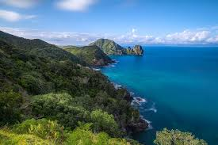
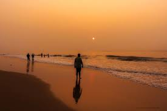
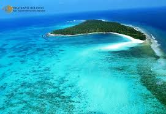

The Malabar Coast stretches along the southwestern coast of India, primarily in Kerala, and is known for its lush green landscapes, rich biodiversity, and historical trading ports. It has a long history of maritime trade, especially with the Arabs, Portuguese, and Dutch, and is famous for its spice plantations, serene backwaters, and beautiful beaches.
The Coromandel Coast lies along the southeastern coast of India, mainly in Tamil Nadu. Known for its wide, sandy beaches and significant ports like Chennai, it has been a key hub for trade with Southeast Asia, particularly during the Chola dynasty. The Coromandel Coast is also famous for its temples, such as those in Kanchipuram and the Shore Temple in Mahabalipuram, and is known for its agricultural productivity, particularly in rice and coconut cultivation.
The Konkan Coast is a stunning stretch of coastline along the western edge of India, extending through the states of Maharashtra, Goa, and Karnataka. It spans approximately 720 kilometers and is known for its picturesque beauty, with rocky cliffs, sandy beaches, lush green hills, and serene backwaters. The Konkan region is rich in cultural diversity, influenced by various dynasties and colonial powers, and is home to vibrant coastal communities.
The Utkal Coast refers to the coastline of the state of Odisha (formerly known as Orissa) in eastern India. Stretching along the Bay of Bengal, the Utkal Coast is renowned for its rich cultural heritage, beautiful beaches, and historical significance. The coastline spans approximately 480 kilometers and is dotted with several notable beaches, temples, and fishing villages.

The Andaman and Nicobar Islands, located in the Bay of Bengal, are an archipelago known for their pristine beaches, crystal-clear waters, and rich history. Highlights include Radhanagar Beach, Havelock Island, and the Cellular Jail in Port Blair. The islands offer excellent opportunities for water activities like snorkeling, scuba diving, and coral watching.
Lakshadweep, situated in the Arabian Sea, consists of 36 islands famous for their white sandy beaches, lagoons, and coral reefs. Islands like Agatti and Kavaratti are ideal for water sports, including diving and snorkeling. Both destinations offer serene beauty and adventure, perfect for nature lovers and beach enthusiasts.
